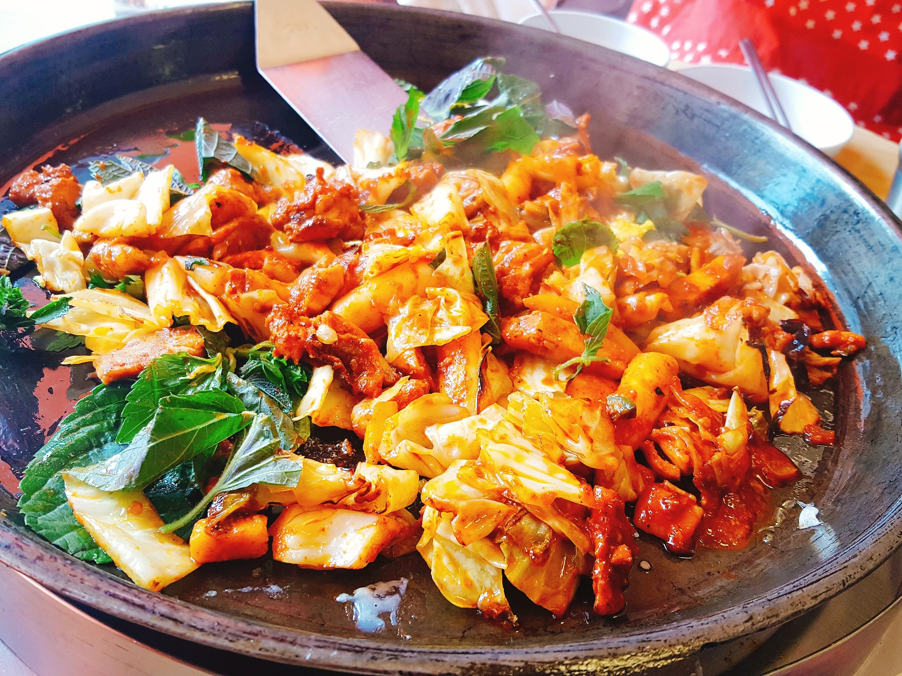

식재료 이모저모 |
|
|---|---|
닭갈비
닭갈비란 닭고기 중에서도 덩어리진 부위인 닭가슴살과 닭다리에 매운 양념을 재워서 양배추, 당근 등의 여러가지 야채, 가래떡 등과 함께 철판에 볶아먹는 요리. 혹은 양념된 닭고기를 숯불에 구워먹는 요리를 말한다. 현재는 조각내지 않고 튀기거나, 기름에 튀기지 않는 방식의 요리도 치킨이라 불리고 있으며 그 외 다양한 변형들이 만들어지고 있다. 즉, 프라이드 치킨의 줄임말로 시작했지만 튀김 방식이 아닌 새로운 닭요리를 통칭하는 용어로 사용되고 있다. 때문에 치킨과 통닭을 같은 뜻으로 사용하는 사람도 많아졌다. 강냉이와 옥수수를 같은 뜻으로 이해하는 것과 비슷하다. 닭갈비는 뼈없는 닭갈비(닭다리살)와 보통 닭갈비(부위는 날개와 갈비살)의 두 가지를 택일해서 고를 수 있고, 내장 부위도 주문할 수 있다. 분량을 셀 때 '대'라고 하는 특이한 단위를 사용하는데, 닭갈비 1대는 닭다리 하나 혹은 닭가슴 반짝을 발랐을 때 나오는 살코기의 분량이며, 철판은 2대, 숯불은 3대를 합쳐서 1인분으로 친다. |
|